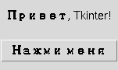
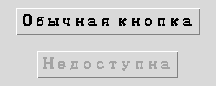

Глава 16 · Создаём классные приложения с Tkinter
Метки, кнопки и их размещение
Первые интерактивные виджеты — и то, как Tkinter размещает их в окне.
Виджет — визуальный объект интерфейса
Виджет (widget) — любой видимый/интерактивный элемент интерфейса: метка,
кнопка, поле ввода. Как и в главе 14, каждый виджет — экземпляр класса со своими атрибутами и
методами. Метка (Label) показывает текст,
кнопка (Button) реагирует на клик.
metki_knopki.py
import tkinter as tk
root = tk.Tk()
label = tk.Label(root, text="Привет, Tkinter!")
label.pack()
def na_knopku_nazhali():
print("Кнопку нажали!")
button = tk.Button(root, text="Нажми меня", command=na_knopku_nazhali)
button.pack()
root.mainloop()
Создание виджета — это не то же самое, что его показ
tk.Button(root, ...) лишь создаёт объект кнопки. Он не появится в окне, пока вы не разместите его через менеджер геометрии — .pack() здесь, или .grid() (раздел 16.7), или .place() (раздел 16.15).command — функция, а не вызов функции
Параметр command связывает кнопку с функцией — важно
передать саму функцию, без скобок: command=na_knopku_nazhali,
а не command=na_knopku_nazhali().
Частая ошибка: скобки в command
na_knopku_nazhali — это сама функция как объект (глава 13). na_knopku_nazhali() — это вызов функции прямо сейчас. command=na_knopku_nazhali() вызовет функцию немедленно, один раз, при создании кнопки — и свяжет кнопку с тем, что функция вернула (обычно None), а не с самой функцией. Клики по кнопке после этого ничего не вызовут.
state="disabled"
Кнопку можно сделать временно недоступной —
button.state(["disabled"]) у ttk-виджетов или state="disabled" при создании. Полезно, пока данные ещё не готовы для действия (раздел 16.23 — валидация).Подробно о pack
.pack() — самый простой способ разместить виджет в окне.
По умолчанию виджеты укладываются друг под другом сверху вниз, но есть полезные параметры:
pack_podrobno.py
label.pack(side="left", padx=10, pady=10)
# side: top (по умолчанию), bottom, left, right
# padx/pady: внешний отступ по горизонтали/вертикалиПодробнее про fill/expand и группировку
через Frame — в разделах 16.13–16.14.
Практика: Label, Button и pack()
Модуль tkinter открывает нативное окно Python — выполните локально в VS Code, PyCharm или Jupyter
Практика выполняется локально